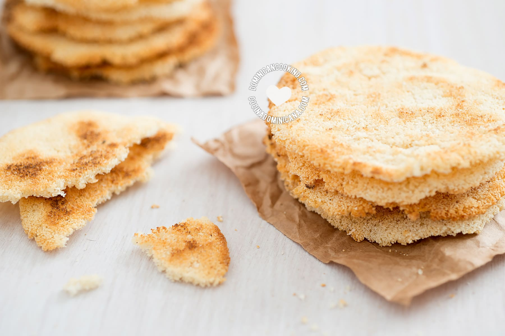

Casabe is a traditional Venezuelan thin flatbread. It is made with flour gained from cassava, an ancient plant native to northern parts of South America. No leavening agent or fat is used in the preparation, and as a result, the bread has an unusually crispy texture.
Meal prep time : 45 minutes
Servings : 6